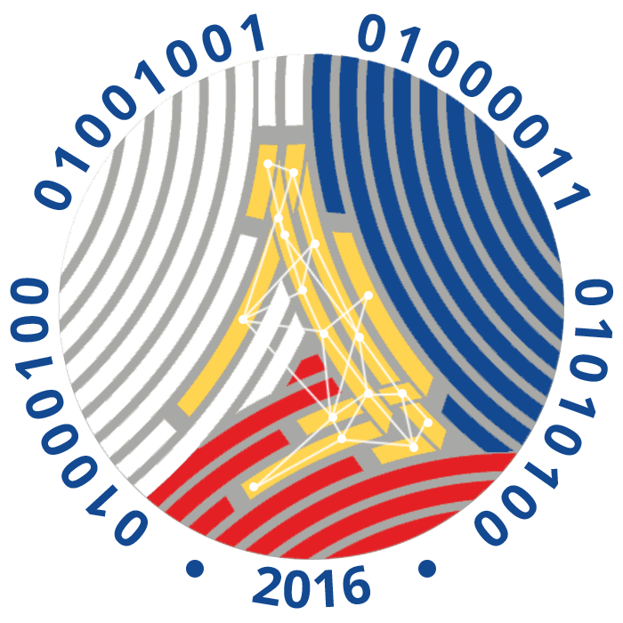

Let AI write the first draft, while you stay in charge

2.6
Digital Productivity Essentials · 2.6 Responsible AI Drafting
The big idea
Treat AI like a fast, eager OJT trainee
⚡
Fast
A draft in seconds, never tired
😎
Confident
Even when it is wrong
❓
Doesn't know your office
Facts, rules and people: only what you tell it
🔒
No confidential files
Never hand them over
Digital Productivity Essentials · 2.6 Responsible AI Drafting
A simple prompt formula
Role · Task · Context · Format · Tone
1
🧑💼
Role
Who should it act as?
→
2
📝
Task
What exactly to write
→
3
📌
Context
The facts it can't know
→
4
📐
Format
Length and shape
→
5
🎙️
Tone
How it should sound
Digital Productivity Essentials · 2.6 Responsible AI Drafting
Worked example · step 1
Our prompt, and what came back
AI assistant
Role: administrative assistant, government office. Task: formal invitation letter to colleagues. Context: Digital Skills Workshop, Thursday, 19 November 2026, 1:00 to 4:00 PM, Conference Room. Confirm by Friday, 13 November. Format: three short paragraphs. Tone: polite, simple English.
Dear [Insert Name], We are thrilled to invite you to an exciting Digital Skills Workshop on Friday, 19 November 2026, from 1:00 to 4:00 PM at the Conference Room! As mandated under Memorandum Order No. 2026-117, this workshop covers word processing, spreadsheets and presentations. Participants will earn 8 CPD units. Kindly confirm your attendance by [Date]. Warm regards, [Your Name]
Digital Productivity Essentials · 2.6 Responsible AI Drafting
Spot the problems
Five problems in one short draft
AI draft.docx
HomeInsertLayoutMailingsView
Dear [Insert Name],Dear [Insert Name],
We are thrilled to invite you to an exciting Digital Skills Workshop on Friday, 19 November 2026, from 1:00 to 4:00 PM at the Conference Room!We are thrilled to invite you to an exciting Digital Skills Workshop on Friday, 19 November 2026, from 1:00 to 4:00 PM at the Conference Room!
As mandated under Memorandum Order No. 2026-117, this workshop covers word processing, spreadsheets and presentations. Participants will earn 8 CPD units.As mandated under Memorandum Order No. 2026-117, this workshop covers word processing, spreadsheets and presentations. Participants will earn 8 CPD units.
Kindly confirm your attendance by [Date].Kindly confirm your attendance by [Date].
🏷️
Placeholders
[Insert Name], [Date], [Your Name]
🗓️
Wrong day
19 November 2026 is a Thursday
🚫
Invented facts + tone
A memo number and CPD units we never gave; too casual
Digital Productivity Essentials · 2.6 Responsible AI Drafting
Worked example · step 2
The human edit: fix, cut, personalise
Invitation Letter.docx
HomeInsertLayoutMailingsView
Dear [Insert Name],Dear «Name»:
We are thrilled to invite you to an exciting Digital Skills Workshop on Friday, 19 November 2026, from 1:00 to 4:00 PM at the Conference Room!The Administrative Section invites you to the Digital Skills Workshop on Thursday, 19 November 2026, 1:00 to 4:00 PM, at the Conference Room.
As mandated under Memorandum Order No. 2026-117, this workshop covers word processing, spreadsheets and presentations. Participants will earn 8 CPD units.As a member of the «Section», you will practise word processing, spreadsheets and presentations you can use at your desk right away.
Kindly confirm your attendance by [Date].Kindly confirm your attendance by Friday, 13 November 2026. Respectfully,
🏷️
Merge fields
«Name» and «Section», ready for mail merge
🗓️
Day checked
Thursday, on a calendar
✂️
Invented facts deleted
No memo number, no CPD units
Digital Productivity Essentials · 2.6 Responsible AI Drafting
Hallucinations
AI can make things up, and say them with confidence
1
Mark every fact: names, dates, days, amounts, references.
2
Check each one against your own source: the request, a calendar, the official website.
3
Delete what you can't verify. Don't ask the AI "is this real?"
4
Search with Ctrl+F for [ and leftovers like "Sure! Here's your letter".
Digital Productivity Essentials · 2.6 Responsible AI Drafting
The most important rule today
Public AI tools are public places
🚫
Never paste
Taxpayer data: names with TINs, income, assessments
Internal memos, case files, audit notes
Personnel records, passwords, account numbers
✅
Do this instead
Use sample data, like Juan Dela Cruz
Describe the type of letter, not the real case
Add real names yourself, offline or by mail merge
Data Privacy Act of 2012 (RA 10173): what you type may be stored by the provider.
Digital Productivity Essentials · 2.6 Responsible AI Drafting
Use it well
Good everyday uses, with guardrails
🏢
At the office
First draft of an invitation or memo template
A public announcement in plain language for taxpayers
🏠
At home
An excuse letter for your child's teacher
A fiesta announcement, or product descriptions
Credit your sources. Disclose AI help where required: "First draft prepared with an AI assistant; reviewed, fact-checked and edited by Maria Santos."
Digital Productivity Essentials · 2.6 Responsible AI Drafting
Quick check
The AI draft cites "Memorandum Order No. 2026‑117". You've never seen it. What do you do?
AKeep it. It sounds official.
BAsk the AI: "Is this memo real?"
CCheck it in an official source
DChange the number slightly
Check outside the chat, and delete it if you can't find it. The AI may simply agree with itself.
Digital Productivity Essentials · 2.6 Responsible AI Drafting
Recap · Topic 2.6
AI drafts. You own the final.
Prompt clearly
Role, Task, Context, Format, Tone
Verify everything
Facts checked outside the chat, no placeholders
Protect and credit
No taxpayer data in public AI; disclose AI help
Next · Lab 2, then 3.1 Application Navigation and Cell Manipulation
AI assistants like Microsoft Copilot, Google Gemini and ChatGPT can
draft our workshop invitation in seconds.
Today you'll learn to ask clearly,
check every fact, and protect the data.
Because whoever signs the letter is responsible for every word
in it.
Treat AI like an OJT trainee.
It writes a draft in seconds and never gets tired.
It sounds confident, even when it's wrong.
It doesn't know your office's facts,
rules or people unless you tell it.
And you'd never hand it confidential files.
So you give clear instructions, you check the work,
and you sign it. Use only the tools your office allows.
Clear in, useful out.
Role:
who should it act as, like an administrative assistant in
a government office. Task:
what exactly to write.
Context:
the facts it can't know, like the date, time and venue.
Format:
three short paragraphs, under 200 words.
Tone:
polite, clear, simple English.
Context is the secret. AI fills every gap you leave with a guess.
Here's our prompt.
We type all five parts, with the real date,
time and venue, and the confirmation deadline.
A few seconds later, the draft is back.
At first glance it looks fine: polite, quick, and the right length.
This is a typical sample of what assistants produce.
But read it like a supervisor.
One: placeholders.
Insert Name, Date and Your Name are still there.
Two: the wrong day.
19 November 2026 is a Thursday, and we said so in the
prompt. Three and four: a memo number and 8 CPD units that we never
gave it. It made them up.
Five: thrilled, exciting and an exclamation mark are too casual for
an official letter.
Now the human edit.
Replace the placeholders with merge fields,
Name and Section, so it's ready for mail merge.
Fix the day to Thursday, checked on a calendar.
Delete the memo number and the CPD units.
Make the tone formal, with your office's usual closing.
The AI took five seconds, the edit about five minutes.
Still faster than starting from scratch, and now it's correct.
A made-up fact is called a hallucination.
AI predicts likely-sounding words; it doesn't know if they're true.
So mark every fact. Check each one against your own source:
the request, a calendar, or the official website,
like bir dot gov dot ph.
Delete what you can't verify.
Then search with Control F for a square bracket and for chat leftovers.
For BIR personnel, this rule matters most.
Never paste taxpayer data, like names with TINs,
income or assessments, into a public AI tool.
No internal memos, case files or personnel records either.
Instead, use sample data, describe the type of letter,
and add the real names yourself,
offline or by mail merge.
Under the Data Privacy Act, personal information must be protected,
and the provider may store what you type.
At the office, use it for a first draft of
a template, or a public announcement in plain language for
taxpayers.
At home, an excuse letter for your child's teacher,
or a fiesta announcement.
Check prices, dates and promises.
Credit your sources, and disclose AI help where your office
or this lab asks, with one line, like the sample signed by Maria Santos.
Quick check. The AI draft cites a memorandum order you've never seen.
Do you keep it, ask the AI if it's real,
look for it in an official source, or change the number slightly?
Think about it for a moment. The answer:
look for it in an official source,
and delete it if you can't find it.
Asking the AI isn't checking; it may simply agree with itself.
So, prompt clearly with all five parts.
Verify everything, outside the chat.
And protect the data and give credit.
Over six topics, we built one complete letter.
Next comes Lab 2, where you build this whole letter